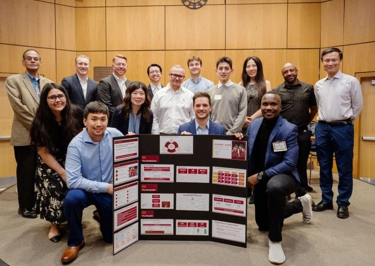

3rd place · March 2026
Read the post
March Data Crunch Madness, Team CourtSide Analytics
Fordham's 13th annual competition, sponsored by Deloitte. The team built a three-part prediction system and gave each part a role.
Not just who is better, but which teams are structurally fragile when it matters most.
An ensemble model covering every possible tournament matchup.
| Accuracy | 70.8% |
|---|---|
| Upset recall | 58.3% |
| Seed 5–12 "Blind Zone" | 5 of 8 upsets |
| Features | 60+ across 8 families → 25 |